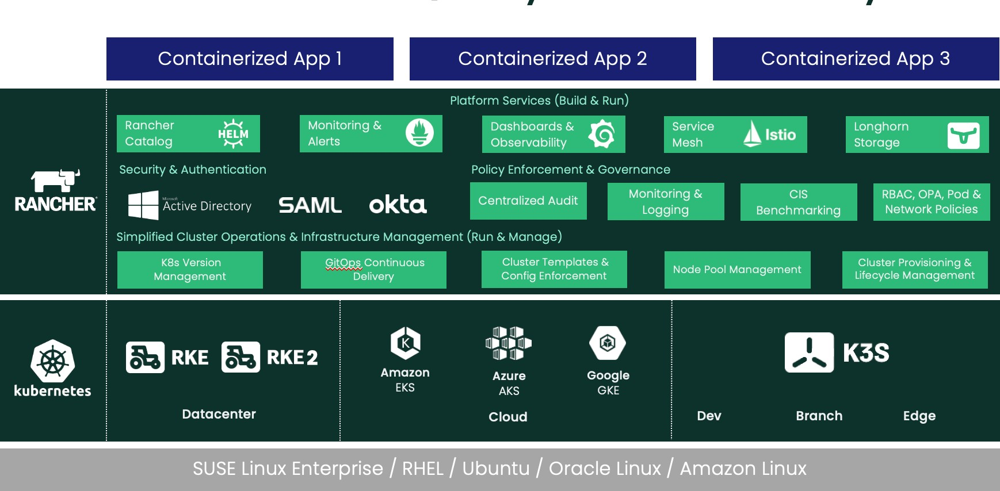
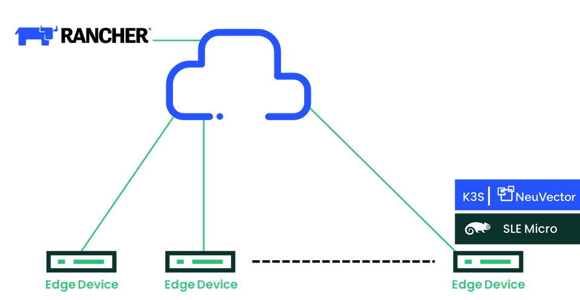
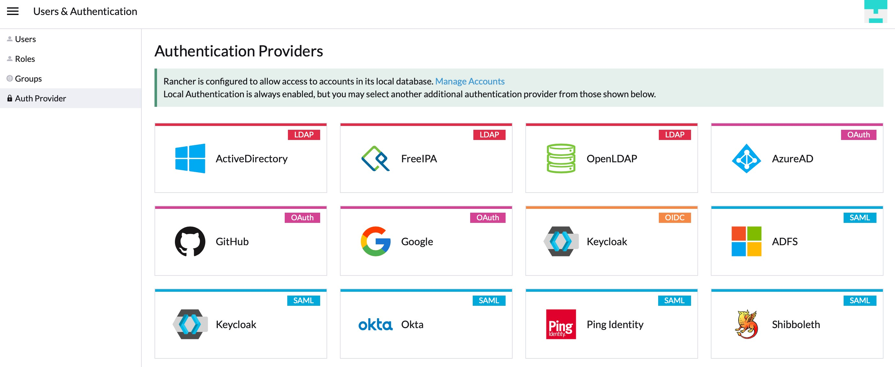
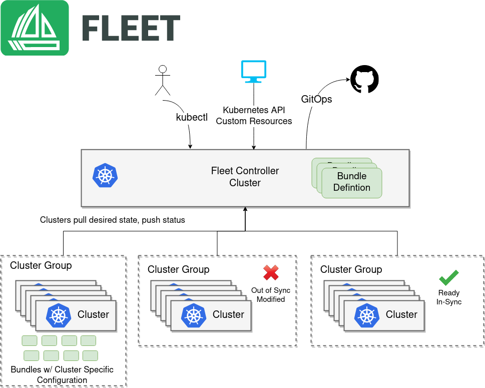
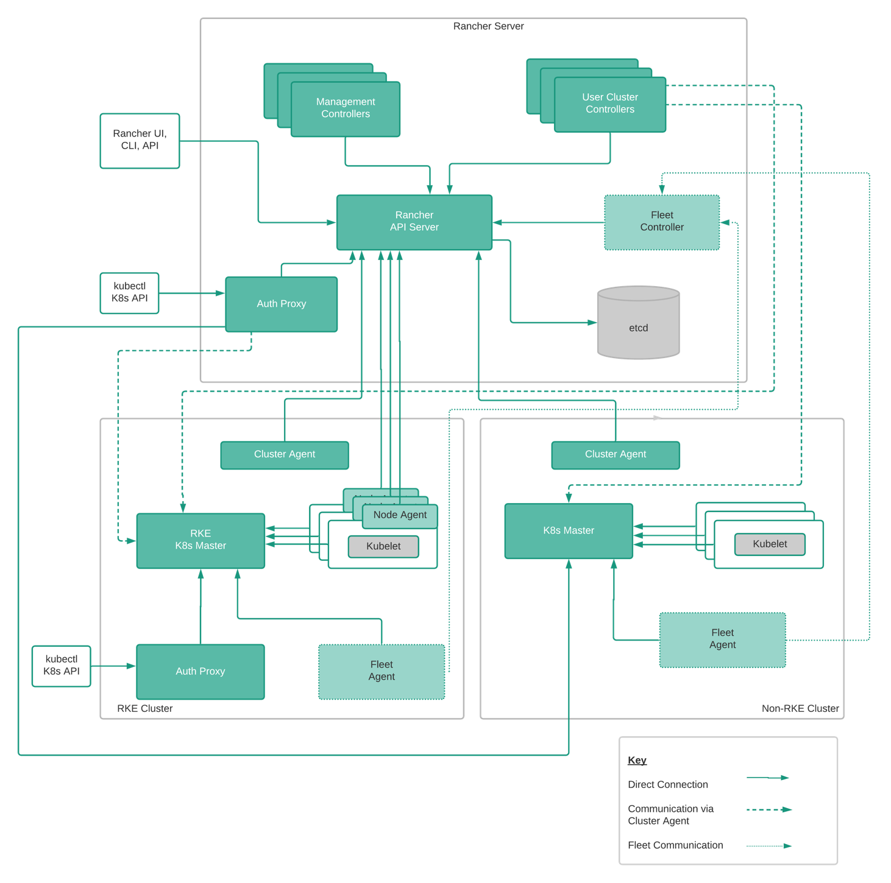
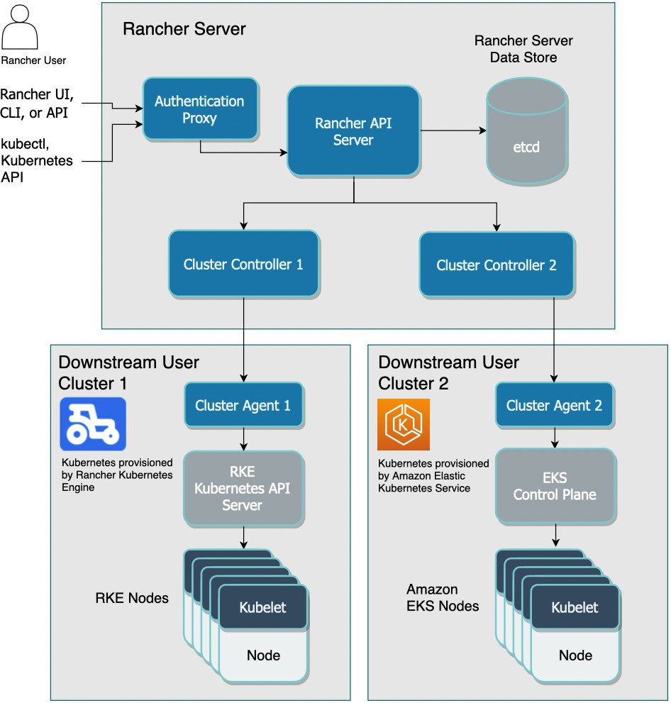

更新时间：2022 年 12 月
Rancher 2.7：
技术架构指南
2022 年 12 月
Fleet 10
在 COVID 之前，许多组织开始使用 Kubernetes 作为数字化转型的一部分，体验编排平台提供的速度、灵活性和稳定性。然而，随着全球大流行病的爆发，组织被迫加速采用容器和云原生技术来满足不断变化的市场需求。2022 年 2 月发布的年度 CNCF（云原生计算基金会）调查表示，96% 的组织已使用或正在评估 Kubernetes。
但是，负责实现 Kubernetes 的团队会面临着复杂的挑战，其中包括日益分散的基础设施环境以及难以雇用支持系统的 Kubernetes 人才。更复杂的是，随着基于容器的生态系统的发展，越来越多的组织进行了多云部署，显著增加了数据中心的攻击面，因此现在需要更加注重 Kubernetes 工作负载的安全性、合规性和监控。
然而，Kubernetes 仍然为企业提供了多种好处，包括：
提供可以跨不同基础设施管理集群的通用平台，更加可靠
通过标准自动化提高 DevOps 效率
确保符合安全/合规策略和法规
但是，由于通常会部署 Kubernetes 集群，因此单独依赖上游 Kubernetes 会带来开销和风险：
没有集中查看
没有一致的安全策略和配置
无法集中管理
Rancher 是一个 Kubernetes 管理平台，它提供了以下功能来帮助你应对这些挑战：
一致的集群操作：简化了 Kubernetes 升级、备份、配置和部署，涵盖了核心，云和边缘。
多集群管理：使用一个控制台即可在从本地到云端的任何地方管理大规模 Kubernetes 集群。
身份验证和用户管理：一致的 RBAC、安全策略和用户管理。
共享工具和服务：开箱即用地访问工具和服务，如统一监控、自动化等。
全面安全性：DISA（国防信息系统局）STIG（安全技术实施指南）1 认证的解决方案，对 Kubernetes 节点和集群进行 CIS 扫描。其他合规性功能，包括审计日志、Open Policy Agent、Gatekeeper、Kubewarden 和 NeuVector 集成。
Rancher 大规模简化了 Kubernetes 管理及其相关操作。它有助于提高自动化和配置管理，同时使用不同的开源项目和工具来实施和保护你的集群。Rancher 帮助你的运营团队消除重复和繁琐任务的负担，同时为开发人员提供更多自由来构建和发布应用程序。
Rancher 2.7 是一个基于 Kubernetes 构建的完整容器管理平台。如图 1 所示，Rancher 2.7 由四个主要组件组成：经过认证的 Kubernetes 发行版（包括 SUSE 的 RKE/RKE2 和 CNCF 沙盒项目 K3s）、一致的集群操作、安全/身份验证/策略管理，以及开发人员平台服务。

图 1：Rancher 大规模管理生产就绪 Kubernetes 的方式概述
RKE 是一个直接、快速的 Kubernetes 安装程序，适用于任何地方。RKE 特别适用于在 VMware 集群、裸金属服务器和云上虚拟机实例上建立 Kubernetes 集群，这些实例尚不支持
1 https://dl.dod.cyber.mil/wp-content/uploads/stigs/zip/U_RGS_RKE2_V1R1_STIG.zip https://dl.dod.cyber.mil/wp-content/uploads/stigs/zip/U_RGS_MCM_V1R2_STIG.zip
Kubernetes 服务。此外，许多人在已经支持 Kubernetes 服务的云提供商中使用 RKE，以便在任何地方都能实现一致的 Kubernetes。在 Rancher 中，集群可以配置到 Linux x86_64 和 Arm64 架构以及 Windows 系统上。
Rancher 中的 RKE 管理 Kubernetes 集群从初始安装到维护的整个生命周期。Rancher 用户可以：
使用主机驱动程序在许多云环境上自动配置 VM 实例。
安装 Kubernetes control plane 和 etcd 数据库节点。
在 Windows 和 Linux Arm64 以及 x86_64 节点上配置 Worker 节点。
在现有 Kubernetes 集群中添加或删除节点。
将 Kubernetes 集群升级到新版本。
监控 Kubernetes 集群的健康状况。
有关 RKE 的更多信息，请访问 http://www.rancher.com/products/rke。
RKE2 是一个完全合规认证的 Kubernetes 发行版，专注于安全和合规性。RKE2 使用了 RKE 和 K3s 发行版的最佳组件。RKE2 为企业和云原生社区带来政府级安全功能，是为了利用整个生态系统的变化而构建的。RKE2 无需依赖 Docker 容器运行时，并包含了受支持的 containerd 运行时。该发行版支持 SELinux，使用 FIPS 认证的 Golang 库编译，是唯一通过 DISA STIG 认证的 Kubernetes 发行版。
RKE2 的配置系统建立在社区标准 Cluster API 规范之上。现在，用户能够更轻松地利用 GitOps 工具，开箱即用地将集群定义为基础设施即代码。此外，通过 Rancher 部署时，RKE2 集群将默认使用开源的 Calico 容器网络接口 (CNI) 插件，以及通过 Multus 将多个网络接口部署到它们的 pod 中的选项。有了 RKE2，用户能够在自定义集群中配置 Windows 节点。
有关 RKE2 的更多信息，请访问 https://docs.rke2.io/。
K3s 打包为单个二进制文件，大小约为 70MB。这个二进制文件捆绑了在任何地方（包括低功耗物联网和基于边缘的设备）运行 Kubernetes 所需的一切。二进制文件包括容器运行时和重要的主机实用程序，如 iptables 和 socat。唯一的 OS（操作系统）依赖项是 Linux 内核本身和适当的 dev、proc 和 sysfs 挂载（在所有现代 Linux 发行版上是自动完成的）。
K3s 将 Kubernetes 组件（kube-apiserver、kube-controller-manager、kube-scheduler、kubelet、kube-proxy）捆绑到组合进程中，这些组合进程呈现为简单的 Server 和 Agent 模型。K3s 可以作为一个完整的集群运行在单个节点上，也可以扩展为一个多节点集群。
除了核心 Kubernetes 组件外，我们还运行了 containerd、Flannel、CoreDNS、Ingress Controller 和一个简单的基于主机端口的 Service Load Balancer。这些组件都是可选的，你可以根据你的实现方式进行更换。有了这些组件，你将获得一个功能齐全且符合 CNCF 标准的集群，因此你可以立即开始运行应用程序。K3s 现在是一个 CNCF 沙箱项目，是第一个被沙箱采用的 Kubernetes 发行版。
Rancher 2.7 发布后，跨 x86 平台部署 K3s 已 GA。
有关 K3s 的更多信息，请访问 https://k3s.io。
有了 Rancher，你可以管理使用现有工具配置的 Kubernetes 集群或使用云上的 Kubernetes 集群。你可以轻松在 Rancher 中配置、导入或管理 EKS（Elastic Kubernetes Service）、GKE 和 AKS 等 Kubernetes 服务。Rancher 是市场上唯一支持跨这三个公共托管平台进行完整生命周期管理的解决方案。此外，你可以在任何云、虚拟平台或裸机基础设施上配置和运行 RKE/RKE2 以及 K3s 集群。
Rancher 可以通过 Rancher Terraform provider，使用 CI/CD 流水线和 Rancher 的 API 或 Fleet 等 GitOps 项目作为基础设施即代码进行管理。你可以轻松地将集群配置、集群模板、策略和应用程序存储在 Git 中，并使用适合你组织需求的任何策略。
Fleet 是由 SUSE Rancher 团队开发的开源项目，它解决了基于 GitOps 的应用程序交付和大规模集群配置管理的挑战。虽然是为大规模使用而设计的，但它也适用于少于 10 个集群的小型部署。
Fleet 非常轻量，可以在最小的部署上运行，甚至在单节点集群中也有优势。Fleet 的主要用例是确保集群中应用程序的部署和配置能保持一致。你可以轻松地跨数百个集群部署应用程序或执行标准，从而实现真正的策略即代码全局策略。
最新的 Rancher 2.7 版本现已支持对基于 OCI 的镜像仓库进行身份验证。请注意，fleet.yaml 的结构是相同的，并且凭证作为 Kubernetes Secret 提供（Repo Structure 文档的 Private Helm Repo 框中已进行了描述）。
Rancher 2.7 引入了扩展（Extension）。管理员现在可以独立于 Rancher Manager 版本对其 UI 功能进行更改和增强。使用扩展应用商店，管理员可以查看已安装的扩展，更新或回滚
现有扩展，并根据需要安装新的扩展。有了扩展，操作人员可以扩展 Rancher 的 UI 和功能。有关如何使用 Rancher 扩展的更多信息，请参阅相关文档。
集群事件现已移至更显着的位置，因此用户能更容易查看集群中发生的事件。此外，诊断页面现在能更详细地显示性能相关故障排除信息。管理员还可以从 Rancher UI 中添加文档的链接。
Rancher 2.7 支持通过扩展在 UI 中启用 Elemental 项目。Elemental 是一个完全集成的解决方案，用于大规模管理边缘设备的整个生命周期。通过使用最新版本的 Rancher、SLE Micro 和 SUSE NeuVector，它带来了一个集成平台，可以跨分布式边缘位置简化、集中和自动化 Kubernetes 和 Linux OS 生命周期管理。

图 2：Rancher + Elemental EDGE 堆栈
Rancher 管理员可以与安全团队合作，从而集中定义用户与 Kubernetes 交互的方式，以及容器化工作负载应如何在所有基础架构中运行，包括托管云提供商（如 AKS、EKS 和 GKE）中的托管集群。定义了统一策略后，你可以立即将它们分配给任何 Kubernetes 集群。
Rancher 不仅安装安全集群，而且能通过 Rancher Server 代理与这些集群的所有通信。Rancher 插入了多个后端身份验证提供程序，例如 Active Directory、LDAP（Lightweight Directory Access Protocol）、SAML、GitHub 等。以这种方式连接时，Rancher 使你能够将现有的企业
身份验证延展到 Rancher 保护的所有 Kubernetes 集群，无论它们在哪里运行。

Rancher 在全局、集群和项目级别启用角色，因此管理员可以在一个地方定义角色并将它们应用到所有集群。
结合默认的 RBAC 和对身份验证和授权的强大控制，意味着从你使用 Rancher 部署或导入集群的那一刻起，该集群就是安全的。
Rancher UI 并没有隐藏底层的 Kubernetes 概念，而是引入了一个不同于 Kubernetes 的应用程序部署框架。Rancher 为 Pod 和 Deployment 等原生 Kubernetes 资源提供了简洁的 UI。
Rancher 中的应用商店基于 Helm Chart。Helm 是一种强大的模板机制，用于在 Kubernetes 上部署应用程序。但是用户仍然需要阅读冗长的文档才能准确了解要设置哪些变量以及这些变量的正确值。这是一个容易出错的过程。Rancher 通过公开正确的变量集并指导用户完成整个过程来简化 Helm Chart 部署。Rancher 应用商店会提出正确的问题并提供合理的默认值和多项选择值。Rancher 支持 Helm 3 应用商店以及基于 Git 的应用仓库。
Rancher 适用于任何与 Kubernetes 集成的 CI/CD 系统。例如，Jenkins、Drone 和 GitLab 将继续与 Rancher 合作，就像他们与其他 Kubernetes 发行版合作一样。如果 CI/CD 系统本身不支持 Kubernetes，你可以嵌入 Rancher CLI 来允许部署到 Rancher 管理的 Kubernetes 集群。
Rancher 适用于任何与 Kubernetes 集成的监控和日志系统。如果要获得开箱即用的体验，用户可以使用内置的 Prometheus 功能。如果已有 Datadog、Sysdig 或 ELK 等现有系统，它们将能继续与 Rancher 使用。对于日志聚合，Rancher 提供了 Fluentd 和 Fluent Bit 的单击部署，它们将从主机发送日志。
Rancher 现在还使用 SLE BCI-Micro 镜像代替 BusyBox 来审计日志 Sidecar 容器。由于 SLE BCI-Micro 基于 SUSE Linux Enterprise Server，是市场上最安全的操作系统之一，因此部署 SLE BCI-Micro 可加强安全性。它还提供必要的工具来完成所需的工作，避免错误配置并最大限度地减少安全风险。
容器环境中的安全事故越来越普遍，错误配置现在是 Kubernetes 环境最主要的安全漏洞。
使用正确的工具来确保集群和平台具有正确的设置非常重要。使用准入控制器和受监管的策略（CIS 推荐做法）来避免部署配置错误的容器是组织需要高度优先的事项。
Rancher 的安全功能不仅限于处理错误配置。Rancher 包含了用于解决漏洞并帮助操作人员管理风险的功能，包括：
审计日志中添加了“用户 ID 跟踪”，用于帮助用户跟踪事件。Rancher 现在在 Rancher 和 Kubernetes 审计日志中包含了 Identity Provider 名称。这提升了 Rancher 的自助服务模型，让用户能清楚地识别集群的所有者。
CVE 的“镜像扫描”现在是版本发布的一部分，会在所有镜像中自动执行，帮助用户轻松确定集群中的镜像是否存在重大漏洞。如果发现任何严重漏洞，Rancher 会采取预先确定的措施来识别、修复和缓解问题。
Rancher 开始采用 SLE BCI（SLE Base Container Image）作为微服务的基础镜像，并允许用户访问安全、开放的镜像，从而帮助用户避免 CVE 和错误配置。
“集群模板”允许操作人员在集群部署中创建、保存和复用经过良好测试的 Kubernetes 配置。这些模板使用了 CIS 最新 Kubernetes Benchmark 的管控和最佳实践。集群模板功能还包括一个策略执行选项，它可以防止配置偏移，并确保你部署的集群在扩展时不会意外引入安全漏洞。
有了“CIS 扫描”，安全和运营团队能够将集群设置与 CIS Kubernetes Benchmark 中的最佳实践指南进行比较，从而自动识别配置错误。Rancher 在集群上运行 CIS 安全扫描时会生成一份报告，该报告会显示每个测试的结果，包括测试概要以及 passed、skipped 和 failed 的测试数量。报告还包括失败测试的修正步骤。
集成了 OPA/Gatekeeper，Kubewarden 和 NeuVector 使准入控制器能够管理集群和策略以及其他安全功能。Pod
安全策略在 Kubernetes v1.21 中弃用，并在 v1.25 中删除。这两个解决方案通过阻止受 CVE 或危险配置影响的镜像，从而确保集群是安全的。
“SUSE NeuVector”可以与 Rancher 一起实现，并通过其全生命周期容器安全功能强化 Rancher。它通过其容器分段和第 7 层深度数据包检查来保护运行时并增加合规性，从而检测和阻止潜在威胁。你可以进一步了解 SUSE NeuVector 的更多信息。
Rancher 2.7 添加了“扩展”的功能，因此你可以在 Rancher UI 中集成新的工具。现在，操作人员可以访问更多安全解决方案，包括新的 CNCF 沙箱项目 Kubewarden。
如果你需要在容器环境中进行其他防御，SUSE 还提供了 Rancher Prime。Rancher Prime 通过产品部署提供了与 Rancher 相同的体验以及更多价值，这是通过受信任的私有镜像仓库、世界一流的 Kubernetes 支持和专业服务，以及安全认证（包括 DISA STIG 和将于 2023 年初完成的 SLSA 2/3 Level 2/3 和 FIPs-140-2/3）实现的。你可以进一步了解 Rancher Prime 的更多信息。
Fleet 有两个简单的上层概念：
集群组：需要作为单个实体的逻辑集群组。
Bundle：部署到集群的资源集合。
Bundle 在 Fleet Controller 中定义，然后使用 Controller 以及定制配置部署到目标集群。虽然可以通过强大的选择器将 Bundle 部署到任何集群，但每个集群都是一个集群组的成员。通过查看 Bundle 和集群组的状态，你可以快速了解大型部署的状态。部署 Bundle 后，Bundle 将被持续监控以确保它是就绪状态，并且资源未被修改。
Bundle 可以是纯 Kubernetes YAML、Helm 或基于 Kustomize 的。Helm 和 Kustomize 也可以结合起来创建强大的工作流。无论你选择哪种方法来创建 Bundle，所有资源都将作为 Helm Chart 部署到集群中。使用 Fleet 管理集群意味着你的所有集群都可以轻松审计，这是因为每个资源都在 Chart 中管理，你只要简单运行 helm -n fleet-system ls 就能查看已安装内容的准确概览。通过结合 Fleet 与基于 Git 的工作流（如 GitHub Actions），你可以轻松实现大规模自动化。

图 3：Fleet 上层架构
Rancher 拥有管理整个 Rancher Deployment 的 Server 组件，并将 Agent 组件部署到 Kubernetes 集群中。
图说明了 Rancher 的上层架构。在该图中，Rancher Server 管理两个 Kubernetes 集群，分别是由 RKE 创建的 Kubernetes 集群和非 RKE Kubernetes 集群，可以是 EKS、AKS、GKE 或任何其他 Kubernetes 集群。

图 4：Rancher 上层架构
在本节中，我们将描述每个 Rancher Server 组件的功能。
Rancher Server 提供了强大的 API。Rancher 使用它所在的底层 Kubernetes 实例的持久数据存储（通常是 etcd）来存储所有配置数据。所有使用 Rancher API 创建的 Rancher 资源都会被转换为 CRD（自定义资源定义）对象，它们的生命周期由一个或多个 Rancher Controller 管理。
Rancher API Server 是 Rancher Server 中所有 Controller 的基础层。它包括以下功能：
面向用户的 API schema 生成，能够插入自定义格式化程序和验证程序。
为 CRD（自定义资源定义）和原生 Kubernetes 对象类型生成 Controller 接口。
对象生命周期管理框架。
状态管理框架。
通过将 TaskQueue 和 SharedInformer 逻辑封装到单个接口来简化通用 Controller 实现。
Management Controller 在 Rancher Server 级别执行活动，而不是特定于单个集群。这些活动包括：
配置对集群和项目的访问控制策略。
管理 Pod 安全策略模板。
通过调用必要的 Docker 主机驱动和 Kubernetes 引擎（如 RKE 和 GKE）来配置集群。
管理用户，即用户的 CRUD（创建、读取、更新和删除）操作。
管理全局级别应用商店，获取上游 Helm 仓库的内容等。
管理集群和项目级别应用商店。
聚合和显示集群统计信息和事件。
管理主机驱动、节点模板和节点池。
在删除 Rancher 中的集群时管理集群清理。
User Cluster Controller 执行特定于集群的活动。User Cluster Controller 分布在正在运行的 Rancher Server Pod 中，用于进行水平扩展。这些活动包括：
管理工作负载，包括在每个集群中创建 Pod 和 Deployment。
将全局策略中定义的角色和绑定应用到每个集群。
将信息从集群传播到 Rancher Server，包括事件、统计信息、节点信息和健康状况。
管理网络策略。
管理告警、监控、日志聚合和 CI/CD 流水线。
管理资源配额。
将 Secret 从 Rancher Server 向下传播到各个集群。
User Cluster Controller 直接连接到 GKE 集群中的 API Server，但通过 Cluster Agent 连接到 RKE 集群中的 API Server。
身份验证代理会代理所有 Kubernetes API 调用。它集成了身份验证服务，如本地身份验证、Active Directory、Okta 和 GitHub。身份验证代理将所有 Kubernetes API 调用转发到下游集群。它集成了本地身份验证、Active Directory 和 GitHub 等身份验证方式。在每个 Kubernetes API 调用请求时，身份验证代理会验证请求方的身份，并在将调用转发给 Kubernetes master 节点之前设置正确的 Kubernetes 消息头。
Rancher 使用 ServiceAccount 与 Kubernetes 集群通信，该 ServiceAccount 为在 Pod 中运行的进程提供身份。
基于 RKE 的集群引入了身份验证集群端点，让本地集群能进行集中式身份验证。这通过在身份验证路径中删除 Rancher Server 来提高可用性，允许在断开连接时管理和操作 Kubernetes 集群。

图 5：Rancher 2.7 身份验证代理通信图
Fleet Manager 负责从 Git 仓库中提取包和定义。每个 Rancher Server 安装中只有一个 Fleet Manager。
Fleet Manager 能满足 Fleet Agent 的请求。
在本节中，我们将描述部署在由 Rancher 管理的 Kubernetes 集群中的软件组件。
Rancher 为每个管理的 Kubernetes 集群部署一个 Cluster Agent。Cluster Agent 打开一个返回 Rancher Server 的 WebSocket 隧道，以便 User Cluster Controller 和身份验证代理可以与用户集群 Kubernetes API Server 通信。请注意，只有 RKE 集群和导入的集群使用 Cluster Agent 来连接 Kubernetes API。像 GKE 这样的云上 Kubernetes 服务已经在公共互联网上公开了 API 端点，因此不需要 Cluster Agent 充当隧道。
Cluster Agent 提供了两个附加功能：
充当其他集群服务（例如 Rancher 的内置告警、日志聚合和 CI/CD 流水线）的代理。在用户集群中运行的任何服务都可以通过 Cluster Agent 公开。该功能也被称为 “magic proxy”。
在注册期间，Cluster Agent 从 Kubernetes 集群获取 ServiceAccount 凭证并将 ServiceAccount 凭证发送到 Rancher Server。
RKE 主要使用 Node Agent 在初始安装和后续升级期间部署组件。Node Agent 没有部署在 GKE 之类的云上 Kubernetes 集群上。Node Agent 为所有集群提供了几个附加功能：
Cluster Agent 的备选。如果 Cluster Agent 不可用，Rancher Server 将使用 Node Agent 连接到 Kubernetes API Server。
kubectl shell 的代理。Rancher Server 通过 Node Agent 连接，在 UI 中隧道化 kubectl shell。Node Agent 比 Cluster Agent 拥有更多的权限，并且需要额外的权限来隧道化 kubectl shell。
Fleet Agent 调用 Fleet Manager 并将它的详情提取为 BundleDeployment。
Fleet Agent 不需要与 Fleet Manager 保持持续连接。下次连接时，Agent 会与 Manager 协调，因此非常适合网络连接不一致的场景。
用户可以使用 Helm 升级 Rancher Server，从而将旧版本的 Rancher 升级到 Rancher 2.7。Rancher 2.7 将自动升级子集群中的 Rancher Agent。然后，用户可以升级 RKE 和 K3s 集群的底层 Kubernetes 版本来体验新功能。此过程也适用于离线环境。有关更多信息，请查看文档。
用户可以使用专用的 RKE/RKE2/K3s 集群来运行 Rancher Server。例如，标准的 Rancher 安装指南创建了一个包含 3 个节点的集群部署，每个节点运行了一个 API Server 和 etcd 数据库实例。Rancher Server 会自动导入运行它的 Kubernetes 集群，这就是“local 集群”。Rancher 会使用 Kubernetes API 并间接使用该集群 etcd 作为主要数据存储。
有关 Rancher 2.7 安装的信息，请参阅文档。
SUSE 是创新、可靠和企业级开源解决方案的全球领导者。SUSE 专注于 Enterprise Linux、Kubernetes 管理和边缘解决方案，SUSE 与全球的合作伙伴和社区合作，使他们能够在任何地方进行创新，包括从数据中心到云，再到边缘等等。2020 年，SUSE 收购了 Rancher Labs，SUSE Rancher 团队仍然在支持成功的开源产品，包括：
Rancher：世界上最受欢迎的企业级 Kubernetes 管理平台，拥有超过 40,000 名活跃用户和超过 1.2 亿的下载量。
RKE：简单、快捷的 Kubernetes 安装程序，适用于任何地方。
RKE2：完全符合合规认证的 Kubernetes 发行版，专注于安全性和合规性。
Fleet：用于大规模管理 Kubernetes 集群的开源项目。
K3s：为嵌入式系统和边缘构建的轻量级生产级 Kubernetes 发行版。2020 年 8 月，K3s 作为沙盒项目捐赠给 CNCF。
Longhorn：强大的 Kubernetes 云原生分布式存储平台。2019 年 10 月，Longhorn 作为沙盒项目捐赠给 CNCF。2021 年 11 月，Longhorn 提升为 CNCF 的“孵化”项目。
Harvester：基于 Kubernetes 构建的现代开源超融合基础设施解决方案。
SUSE NeuVector：开源的零信任 Kubernetes 原生安全平台。
Kubewarden：Kubernetes 的策略引擎。2022 年 6 月，Kubewarden 作为沙盒项目捐赠给 CNCF。Kubewarden 执行策略即代码模型，允许你使用自己喜欢的编程语言编写策略。
收购后，Rancher 的所有产品和项目都保持开源，并得到了活跃的社区的支持。SUSE 为一些解决方案提供了企业支持订阅，我们使用“Rancher Prime”来区分这些解决方案。
这些产品共同帮助 IT 人员、DevOps 和技术团队应对跨任何基础设施管理经认证的 Kubernetes 集群的运营和安全挑战。他们还为开发人员提供了一个集成的工具栈，用于大规模构建和运行容器化工作负载。
要了解有关 Rancher 的更多信息，请访问 www.rancher.com。
有关 Rancher Prime 订阅的最新支持功能，请查看我们的支持矩阵：
www.suse.com/suse-rancher/support-matrix/all-supported-versions/